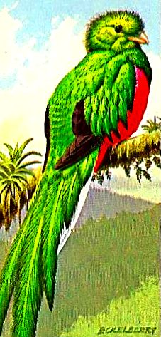

Sunday, December the 4th, 2016
back to: title, date or indexes
Yes, yes, I realise I am blundering into the World o' Advent Calendars four days late. Just bear in mind that my health is pitiful and I have the eyesight of a mole, and bear with me. What we are going to do is to jump-start the calendar with four postages today, and you can pretend they have appeared with rigorous regularity since the beginning of the month. I shall endeavour to post the rest of them daily until Christmas or, as John and Yoko would have it, until war is over.
All these birds come from the collection of Andy Martin, tyrannical leader of UNIT, to whom many many thanks.
